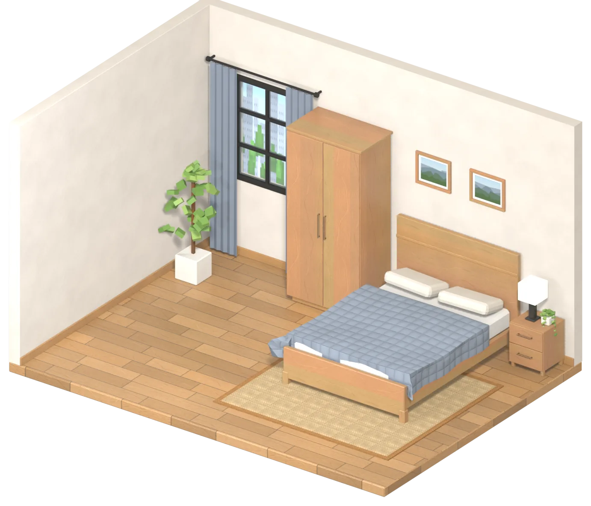
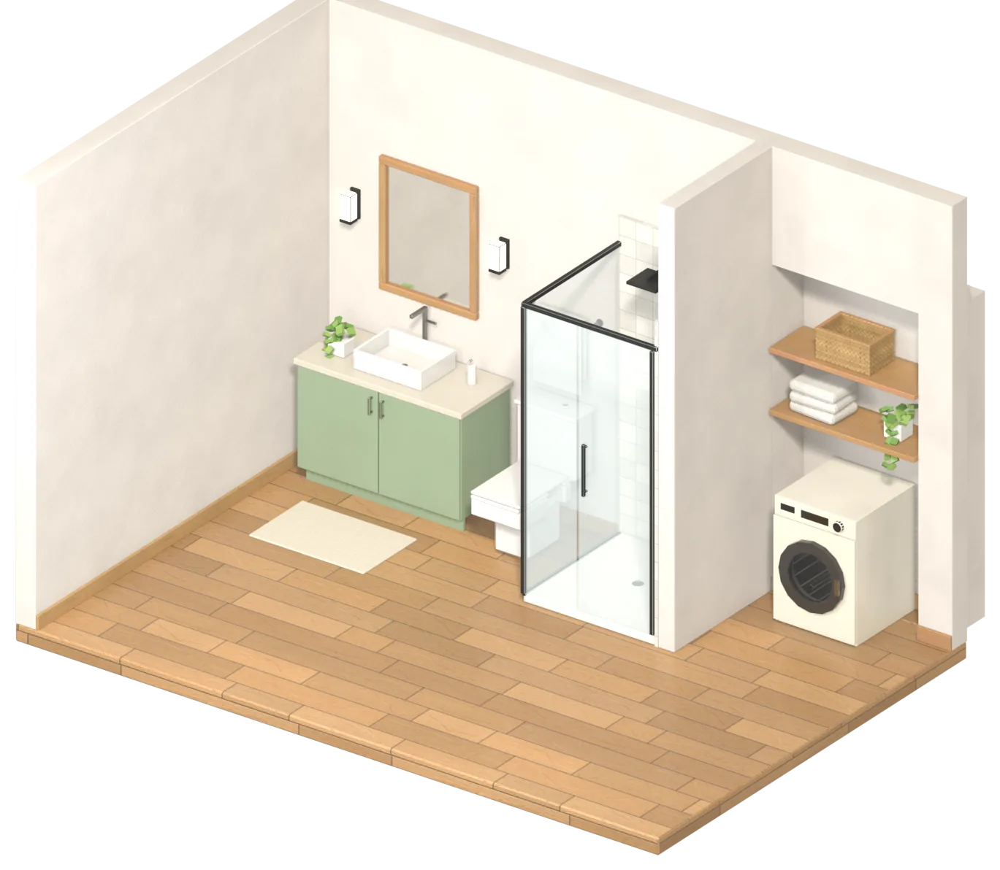
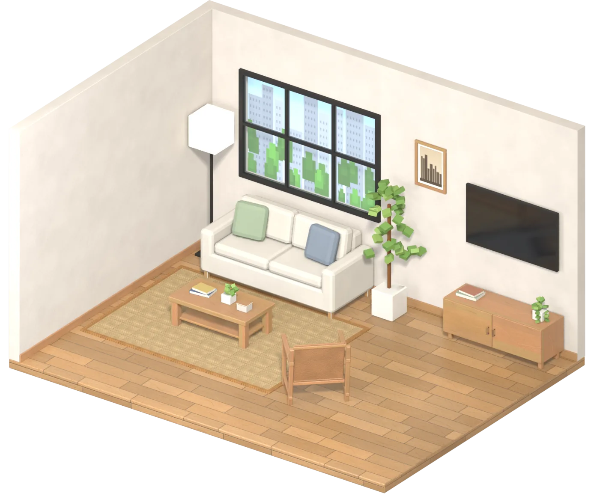
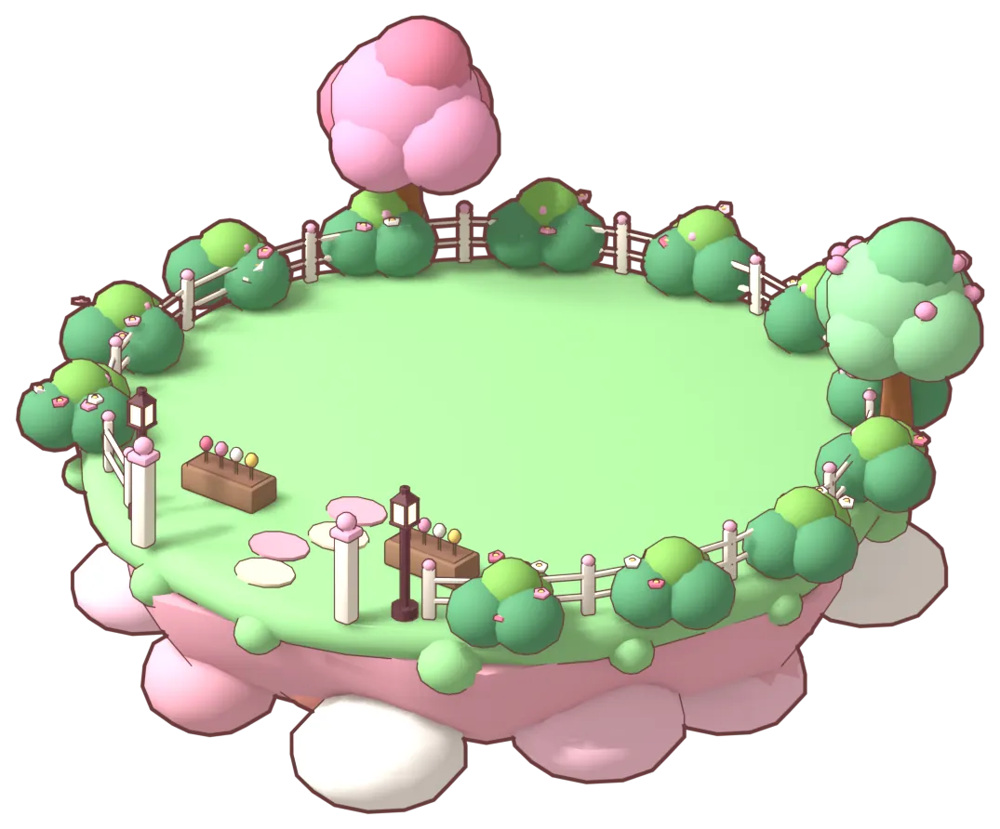
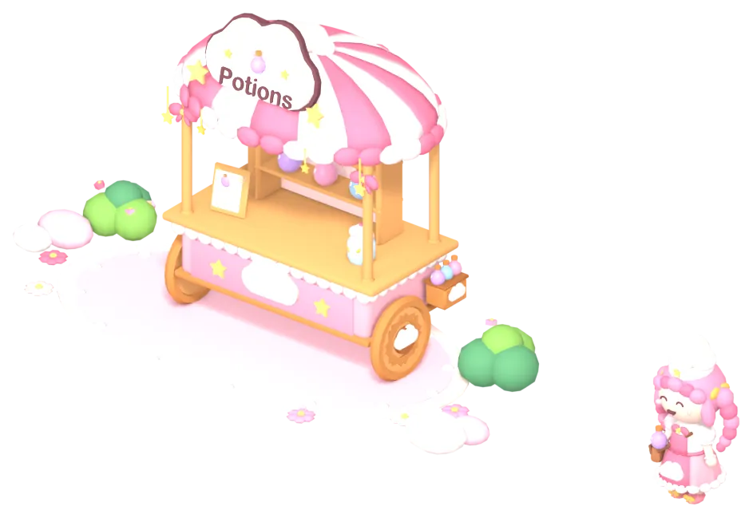
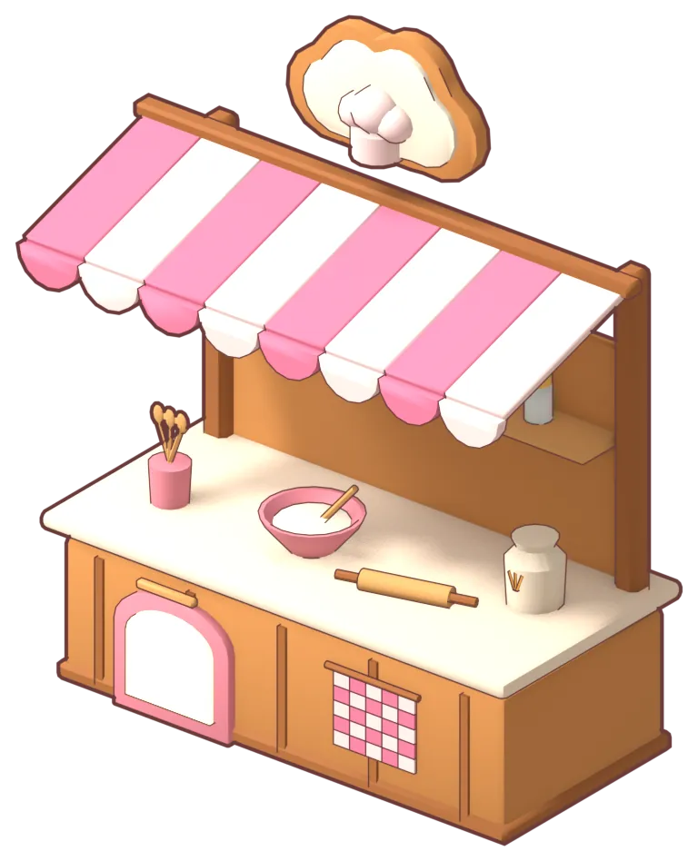
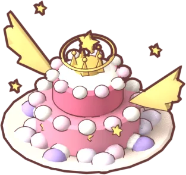
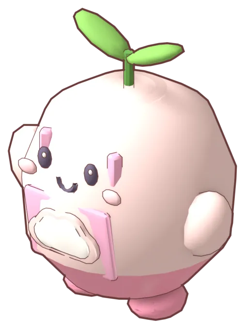
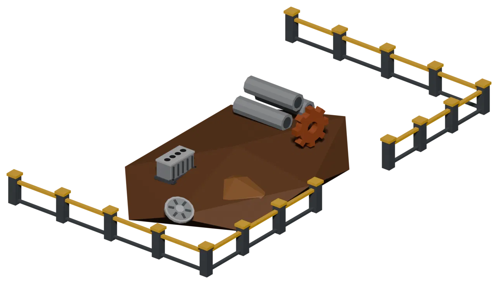
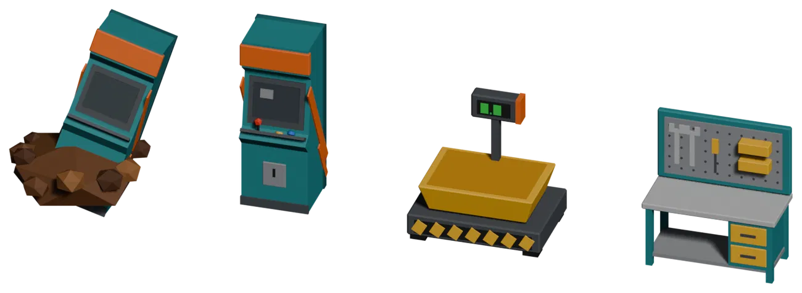

Cozy Low-Poly Home Kit
Blender · PBR texturesFour furnished rooms for a roleplay game, sized for R15 avatars. Doors, drawers, the oven and the washer all open on real hinges.




Cloud Kitchen
Stylised · outlinedA pastel farming and baking game on floating sky islands, with 18 growing crops, 37 desserts and drinks, helpers and decorations.





Magnet Salvage Simulator
Map · propsA junkyard map built for magnet hunting, with ponds, a scrap pen and a flooded lot, plus the tools and machines players use.


